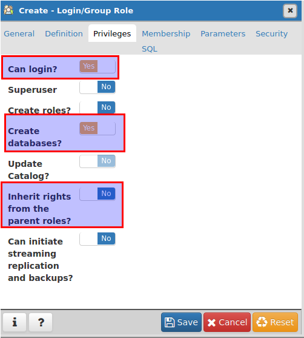

holi/web/router.ex
##holi/web/views/page_view.ex defmodule Holi.PageView do use Holi.Web, :view end
##holi/web/templates/page/saludo.html.eex <h2>Saludo a: <%= @amiguito %></h2>
Ecto is a domain specific Language for writing queries and interacting with databases in Elixir.
Ecto interactua con determinadas bases de datos SQL and NoSql, ninguna de estas hecha en Erlang.
. Similar en cierto modo a =NoSql, pero se diferencia en guardar terminos Erlang.1Login/Group Roles para luego |> Create |> Login ...
holi_dev) con una contraseña en definition|>password y nos aseguramos que tenga los siguientes privilegios:
##holi/config/dev.exs ... config :holi, Holi.Repo, adapter: Ecto.Adapters.Postgres, username: "holi_dev", password: "123456789", database: "holi_dev", hostname: "localhost", pool_size: 10
Para crear la base de datos ejecutamos mix ecto.create
## holi/lib/holi/repo.ex defmodule Holi.Repo do use Ecto.Repo, otp_app: :holi end
En pasos previos, para crear la base de datos tuvimos que configurar a Holi.Repo.
Posts:
| id | author_id |
titulo | body |
| 1 | 1 | Ecto | Ecto es un lenguaje de dominio especifico que … |
| 2 | 1 | Repo | Repo es el intermediario entre los querys y la base de datos |
Autores:
| id | nombre |
| 1 | Albert Castellano Moreno |
Todas las funciones de Repo toman un Ecto.Queryable como primer argumento:
SchemaSchemas?An Ecto schema is used to map data source into an ELixir struct. One of such use cases is to map data coming from a repository, usually a table, into Elixir structs. – Ecto Schema Documentation
schemaschema ejemploPosts:
| id | author_id |
titulo | body |
| 1 | 1 | Ecto | Ecto es un lenguaje de dominio especifico que … |
| 2 | 1 | Repo | Repo es el intermediario entre los querys y la base de datos |
defmodule MyApp.Post do
use Ecto.Schema
schema "posts" do
belong_to: :autor, MyApp.Autor
fields :titulo, :string
fields :body, :string
end
end
schema ejemploAutores:
| id | nombre |
| 1 | Albert Castellano Moreno |
defmodule MyApp.Autor do
schema "authors" do
has_many :posts, MyApp.Post
field :nombre
end
end
:string:integer:map:binary:float:booleanhas_onehas_manybelong_tomany_to_many
%MyApp.Autor{
nombre: "Albert Castellano Moreno"
posts: #<Ecto.Association.NotLoaded>
}
%MyApp.Post{
titulo: "Ecto",
body: "Ecto es un lenguaje de dominio especifico que ..",
autor: #<Ecto.Association.NotLoaded>
}
schema "author" do
has_many :posts, MyApp.Post
field :nombre, :string
field :autenticado?, :boolean, default: false, virtual: true
end
##Resulta en la siguiente estructura
%MyApp.Autor{
nombre: "Albert Castellano Moreno",
posts: #<Ecto.Association.NotLoaded>,
autenticado?: false
}
import Ecto.Query, only: [from: 2]
query =
from p in MyApp.Post,
where: p.titulo == "Texto Titulo de Post",
limit: 2
# => %Ecto.Query{...}
## Otra forma de crear el query
import Ecto,Query, only: [where: 2, limit: 2]
query =
MyApp.Post
|> where(titulo: "Texto Titulo de Post")
|> limit(2)
# => %Ecto.Query{...}
# Ecto.query
from p in MyApp.Post,
where: p.titulo == "Texto Titulo de Post",
limit: 2
# SQL Generado
SELECT * FROM post p
WHERE p.title = 'Texto Titulo de Post'
LIMIT 2
from p in MyApp.Post,
where: p.titulo == "Texto Titulo de Post" and p.body == "Texto contenido",
limit: 2
## Interpolante Variables
variable = "Algun texto creado fuera del query"
from p in MyApp.Post,
where: p.titulo == ^variable,
limit: 2
## Esquema de menos consultas
from p in MyApp.Post,
where: p.titulo == ^variable,
limit 2,
select: %{titulo: p.titulo, body: p.body}
#Ejecutar el query (que veremos en breve) retorna:
[%{titulo: "Ecto", body: ".........."}]
from p in MyApp.Post,
where: p.titulo == ^variable,
limit 2,
select: {p.titulo, p.body}
from p in MyApp.Post,
join: a in assoc(p, :autor),
where: p.titulo == ^variable,
limit: 2
select: {p, a}
from p in MyApp.Post,
join: a ins assoc(p, :autor),
where: p.titulo == ^variable,
limit: 2,
preload: [autor: a]
defmodule MyApp.Post do
use Ecto.Schema
# ...
def reciente do
from p in __MODULE__,
order_by: [asc: p.inserted_at],
limit: 5
end
end
MyApp.Post.reciente()
# => %Ecto.Query
## Extendiendo queries
from p in MyApp.Post.reciente,
where: ilike(p.body, "%Ecto%")
MyApp.Post.reciente
|> where([p], ilike(p.body), "%Ecto%")
Changesets validan los cambios de un nuevo o existente registro utilizando una serie de cadenas de funciones antes de que sean escritos en en la base de datos.
Etapa de validacion de datos con elixir.
defmodule MyApp.Post do
use Ecto.Schema
# ... (definiendo el schema)
# ... (agregando posible funciones que utilicen Query DSL)
def changeset(struct, params \\ %{}) do
struct
|> cast(params, [:titulo, :body])
|> validate_required([:titulo, :body])
end
end
Funcion cast:
cast/3 convierte una struct y params en un Ecto.Changeset, usando una lista de fields permitidos como filtro.
cast(struct, params, fields_permitidos)
# => %Ecto.Changeset{}
Funcion validate_require:
Funcion de validación que toma un changeset como primer parametro y una lista de parametros requeridos olbigatoriamente.
validate_required(changeset, fields_obligatorios)
validate_requiredvalidate_formvalidate_changevalidate_lengthvalidate_numbervalidate_subsetvalidate_exclusionput_change: Agrega un cambio a los cambios.delete_change: Borra un cambio de los cambios.add_error: Agrega un error a los errores.
Toma como parametro un query o modulo y reporta todos los datos que cumpla la condicion.
Repo.all(from p in Post where p.titulo == "Ecto") Repo.all(Post)
Repo.get(Post, 1) ##Devuelve el POst cuyo id es 1, retorna nil si no encontro resultados, provoca un error si encuentre más de un resultado. Repo.get!(Post, 1) ## Devuelve el Post cuyo id es 1, falla la operacion en cualquier otro caso.
Repo.get_by(Post, titulo: "Ecto", body: ".......") Repo.get_by!(Post, titulo: "Ecto") ## Mismo funcionamiento que la funcion get pero aqui se detallan otros parametros de busqueda
Similar a los ateriores con la diferencia de que como parametro recibe un query
Post |> Repo.all |> Repo.preload([:author])
Repo.insert(%Post{titulo: "Ecto"})
# => {:ok, post}
Repo.insert!(%Ecto.changeset{})
# => Ecto.InvalidChangesetError
case Repo.insert(changeset) do
{:ok, post} ->
#Render ok
{:error, changeset} ->
#Render changeset error
end
params = %{titulo: "Nuevo Titulo"} #Quizas eso sale de un formulario
post = Repo.get(Post, 2)
changeset = Post.changeset(post, params)
case Repo.update(changeset) do
{:ok, post} ->
#Render ok
{:error, changeset} ->
#Render changeset error
end
post = Repo.get(Post, 1)
changeset = Post.changeset(post, %{titulo: "Nuevo Titulo"})
Repo.insert_or_update(changeset)
Repo.delete(post)
# => {:ok, post}
pero aun no tenemos la base de datos tal como lo describimos en los schemas, asi que
:SLIDE: segue dark quote :ASIDE: right bottom :ARTICLE: flexbox vleft auto-fadein
migrations?Migration son scripts usados para modificar el esquema de tu base de datos a través del tiempo.
migrations?
defmodule Enelproject.Repo.Migrations.CreateLdp1 do
use Ecto.Migration
def change do
create table(:ldp1) do
add :fecha, :datetime
add :canal1, :float
add :canal2, :float
add :canal3, :float
add :canal4, :float
add :canal5, :float
add :canal6, :float
add :user_id, references(:users, on_delete: :delete_all)
timestamps
end
create index(:ldp1, [:user_id])
end
end
change: maneja automaticamente las migraciones y los rollback que se detallen dentro de la funcion.create table(:ldp1): Crea la tabla lp1 en la base de datos con su contenidoadd: agrega una columna a la tabla con un nombre y tipo de datos guardadoOtras funciones:
alter table(:ldp1): funcion que modifica a la tabla ldp1remove: elimina una columnarename: cambia de nombre a una columnamodify: modifica una columna (cambia el tiempo de dato que se guarda en la columna)
Ejecuta el siguiente codigo: mix phoenix.gen.html User users name:string email:string bio:string number_of_pets:integer
Luego ejecuta: mix ecto.migrate
Ejercicio:
holi/lib/priv/repo/migrationsholi/web/modelsholi/web/controllers/user_controller.exGracias ˊ・ω・ˋ